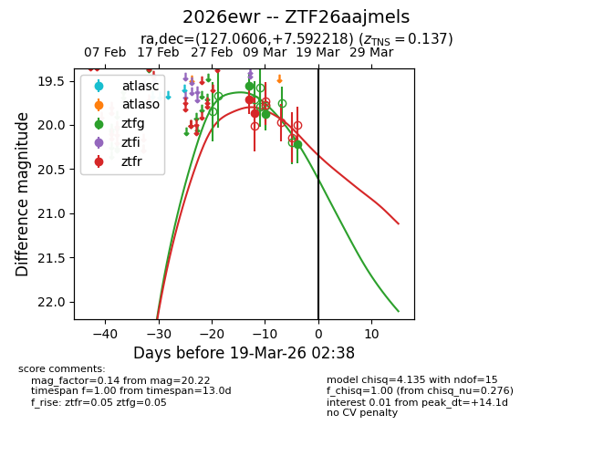
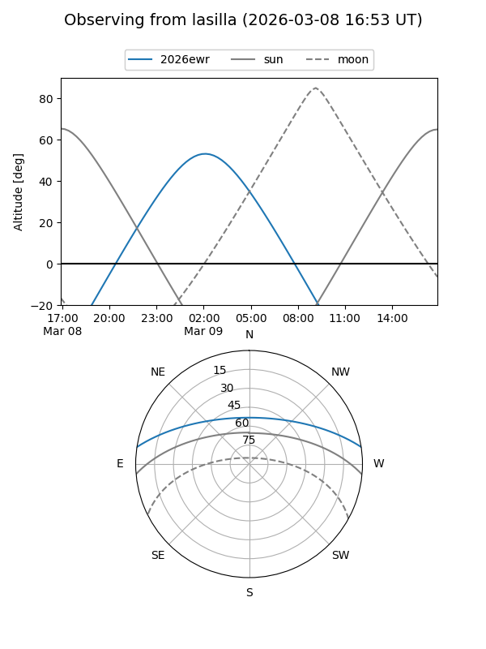
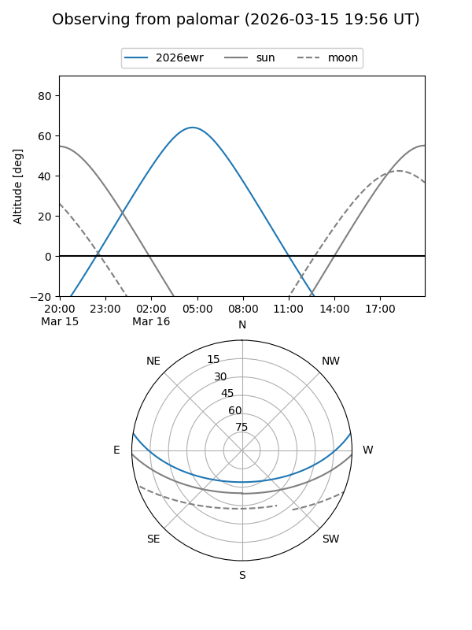
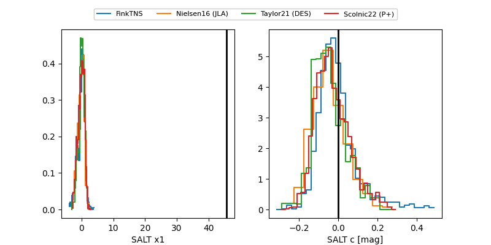

2026ewr
Target 2026ewr at 2026-03-19 02:39
Aliases and brokers:
FINK: link
Lasair: link
ALeRCE: link
TNS: link
YSE: link
alt names
ZTF26aajmels (ztf,fink_ztf)
2026ewr (tns,yse)
Coordinates:
equatorial (ra, dec) = 127.0606,+7.59222
equatorial (HMS+DMS) = 08:28:14.53,+07:35:31.98
galactic (l, b) = (217.2143,+24.95390)
Flags:
confirmed ia
Photometry:
last ztfg=20.22, ztfr=19.87
3 ztfg, 2 ztfr detections
Lightcurve

Visibility


Additional plots
